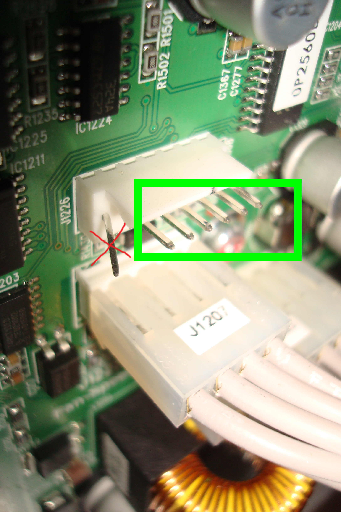
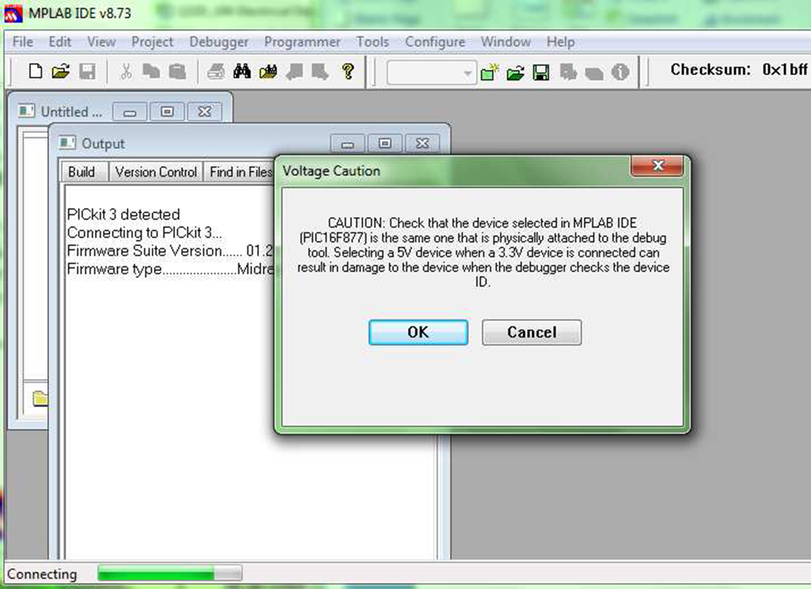
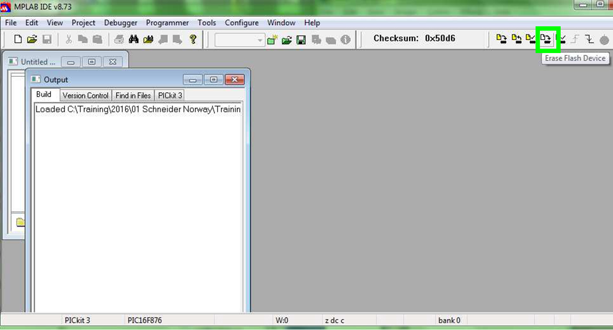
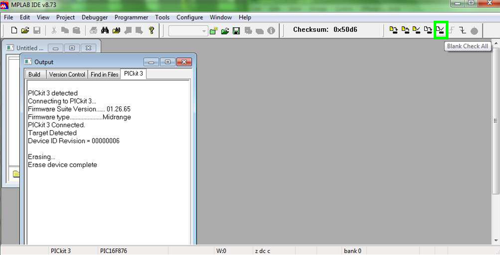
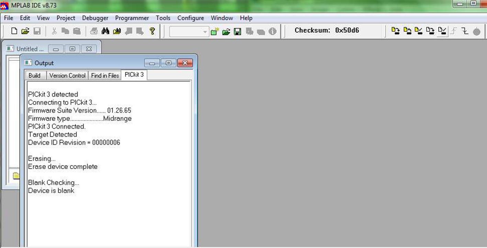

Connect the computer to the independent static bypass switch
controller board with the PICkit 3 in-circuit debugger. Do not connect
the PICkit 3 in-circuit debugger directly to the independent static
bypass switch controller board, but use a cable in between. Only connect
to six of the seven pins – see image.

Close the static bypass input breaker Q528. The independent
static bypass switch controller board turns ON (onboard LEDs illuminate).
Launch the MPlab8.73a software on
your computer.
Click on Configure > Select Device.
Select the chip model used on the independent static bypass
switch controller board: PIC16F876.
The Mplab software will perform
a verification of the chip selection.

If the correct chip PIC16F876 is selected, the following screen will appeared without any error
message.
Click on File > Import and browse to the latest firmware
file. Select the latest independent static bypass switch controller
board firmware that matches the independent static bypass switch controller
board part number.
Click on the Erase Flash Device icon
to empty the PIC16F876 chip memory.

Click on the Blank Check All icon
to verify that the PIC16F876 chip is empty.


Click on the Program icon to write
the latest firmware into the PIC16F876 chip.
The independent static bypass switch controller board
firmware update is complete. Open the static bypass input breaker
Q528 to restart the independent static bypass switch controller board.